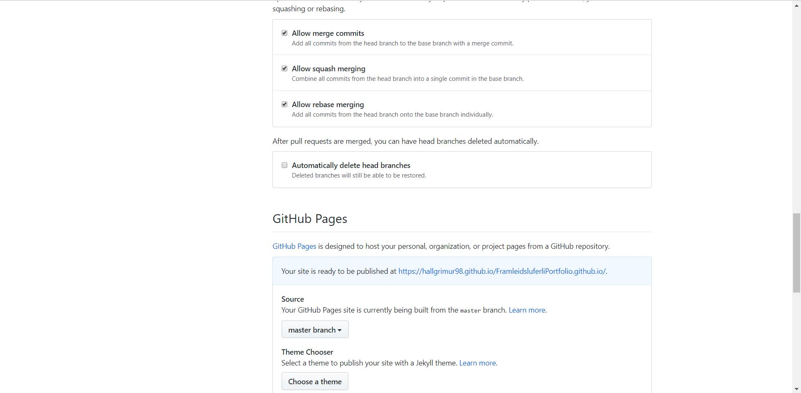

Documentation
We had to make a website, an online profolio for this course with html coding. I didn't know the slightest thing about coding in
html so I decided to try to learn it from youtube. I tried to make my own website from scratch but after having half of it ready
and finished I decided it wasn't the best page for a portfolio so I stopped working on it. I decided it was easier to go online
and look for a site type which I could use and would be more convenient for an online portfolio.
There I found a perfect fit for my idea for a portfolio. It would come to look like this in the end.
This was a fantastic format, it had pretty much everything I wanted, from a really cool navigation bar to contact info and adjustable
text and links. All I really had to do was upload my projects into it and make sure I knew the basics of html coding to make it work.
Most of my time on making the website was spent on the one that was scrapped, but I really learned how to code a bit in HTML from
making that one. However, I didn't really know how to document the assignments into it, since I had to make a new file for them.
After receiving some help, I got the idea of how to do them, but it wasn't as neat as the rest of the site.
I was a bit sad that I didn't get to really try out the features of the carousel that came with the format since I only had
4 assignments and they all fit into it so that there was no need to "spin the carousel".
Uploading the website
Now to upload the website I was instructed to use Github. The first step was to download Git bash and to find a youtube video
to teach you how to use it. I found quite a few of them and followed their instructions. I created an account on Github and
made a new repository. I uploaded all my files there and then opened the folder where all my files where. All there is to do
is right-click and select "Git bash here". Then I followed the instructions of the video, using commands "git init", "git status",
"git add .", "git commit -m 'First commit' ." and "git remote add origin".
However, this didn't seem to work after around 8 hours of trying to upload it using Git Bash. So I found another youtube video
which reccommended using GitHub Desktop. It's a more friendly user interface for inexperienced coders.
I found it extremely easy to upload it there. Here below you can see the program.
Once in GitHub Desktop you click file and select Clone Repository. You then have to sign in using your Github account. Now
you can choose the repository that you made in GitHub (I chose to make a new one, without any uploaded files). It's handy to choose the location
where you want it to go and then you choose "Clone". Now you have a new folder, and then you move all the files that make up
your website into it. Now you have to type in a summary, I chose "First commit" and then you click "Commit to master". This will
link everything to your online repository. You will then get the option in GitHub Desktop to "Publish branch" and your files
will be moved to your online repository.

In settings you scroll down to GitHub Pages and set the source to master branch. Refresh the page and a link will be generated
for your online website. This is how mine turned out.
Then I found it quite easy to make changes to the site, all I had to do was open my repository and change the code. I found it
better to code first in Visual Studio Code just to see how it would turn out before I commited any changes.
An example of code is the contact info bar. You can see that down below, it was a great help to have a website format.
Looking back on this project, building a website, I wish I had learned about the website formats earlier, although I learned a
bit about coding in html by trying to build the first website from scratch. The most time-eating individual part for me was
to upload the website to Github. The rest sort of fell into place but I really struggled with uploading it. When I discovered
Github Desktop, (and the right youtube video to teach me about it) everything worked out finally.